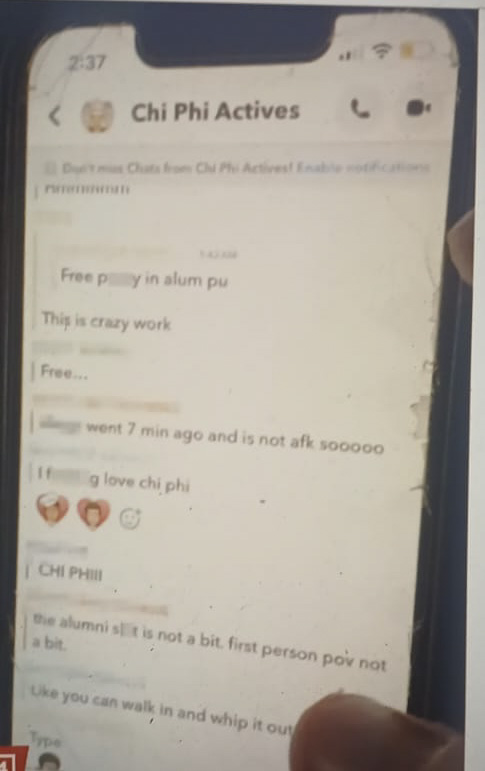
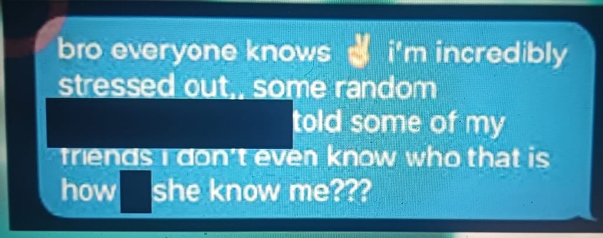
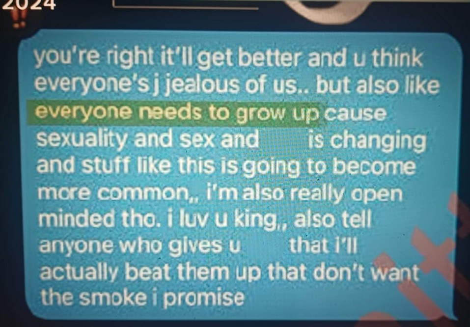
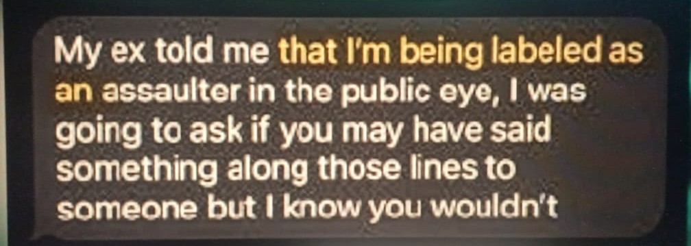
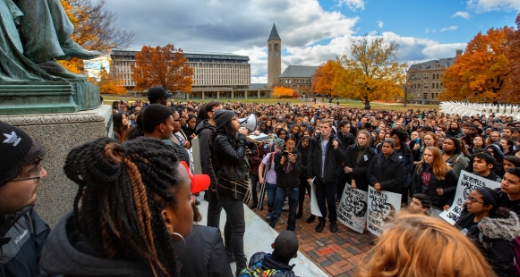

On 16 September 2026, a former Cornell student filed a civil lawsuit against the university. She alleged she was drugged and gang raped by seven students at the Chi Phi fraternity house in 2024 — and that Cornell failed to protect her and punish the alleged perpetrators.
A timeline drawn from Jane Doe's sworn statement to Cornell police, her Title IX testimony, and records reviewed by The New York Times.
Jane Doe, a 20-year-old student, attends a sorority social event at Moonies Bar & Nightclub in Ithaca, New York. She alleges bar staff knew she was below the legal drinking age of 21 but still served her at least one drink.
According to Doe, she had drunk approximately 10 drinks in three hours.
She walks about 1 mile from the bar to visit a male friend — Matthew Ingalls, a member of the school's Chi Phi chapter — at the fraternity house on 107 Edgemoor Lane.
According to Doe, Ingalls took her inside, gave her another beer, and proposed a threesome with a second man. Her 2024 signed statement to police said she "agreed due to how attracted she was to him."
She consumed marijuana, rum, and ketamine with the men. She later noted it was her first time consuming ketamine, and that she was pressured to take it.
She reportedly developed bruising as a result of the sexual activity. She later engaged in further sexual activity with one of these men and a third man who entered the room.
Some of the men exchange Snapchat messages in a group chat called "Chi Phi Actives".
As four additional men entered the room, Doe was "horrified" and hid under the covers of the bed. According to her 2024 report, these men ingested ketamine and a majority left after making additional advances.
At various points, she allegedly told some of them she was "uncomfortable" and "tired".
As the majority of the men left, two of them removed her to another room. In her six-page sworn statement to Cornell police she said: "I had become extremely uncomfortable with how this night was turning out, so my thought was, if I do ketamine again, maybe I will pass out. My thought was that if I passed out and these men have sex with me, then they could have been charged with rape at this point."
At Cornell's Title IX hearing in May 2025, Doe alleged these two men were "just raping" her as she was "in and out of consciousness." She described it as her "worst" experience of the night.
In her longer initial statement to police, she said her eyes were "looking in different directions" and she became "completely numb to the situation."
Prosecutors did not seek additional records of the incident beyond Doe's six-page statement to campus police, and did not review the voluminous record of the internal probe.
According to records reviewed by The New York Times, Jane Doe returned to her residence on the morning of October 20, 2024, after spending the night at Chi Phi.
Doe reportedly told her sorority "big sister" that people were calling her a "sl*t". Around the same period, she exchanged text messages with Jonathan Newell, one of the men she would later accuse.
She visited Cornell Health for a urinary tract infection and sought testing for sexually transmitted diseases. According to The Times, she told investigators she described the infection to the doctor as having occurred in a "traumatic way."
She called Matthew Ingalls — the friend who invited her to the house — and told him: "...if I wanted to take this somewhere, what y'all did would be classified as gang rape... you already knew when I came in I was 10 shots down."
Messages exchanged by members of the fraternity in the early hours of October 20, 2024.

Screenshot of the "Chi Phi Actives" group chat, as reviewed by The New York Times.
Three weeks after the night, Jane Doe called Matthew Ingalls — the friend who had invited her to the fraternity house.
"...want me to give my recollection of the entire night?"
She told him she had spent time in the emergency room and in therapy.
"...there's so much damage on my body and my brain"
"...if I wanted to take this somewhere, what y'all did would be classified as gang rape... you already knew when I came in I was 10 shots down."
"You did tell me you were sober by the way."
"You did, you said you hadn't been anywhere."
She asked him how they ended up in a threesome with one of his frat brothers.
"So you, you come in, say hi. We start dancing for like maybe 3–5 minutes, and then I pop up the question. You say yes."
"Then I remember, like, we didn't know who else to bring so I go up to [unidentified] who was on the dance floor too, and I pop up the question and he's like, 'yo', and then we go upstairs."
She said that four were in bed and the rest were standing.
"I have racked my brain for this mystery. You know it's possible that both of us like, remember, this, and it's not true."
"No, because I remember looking up and being like 'That's too many people.'"
"Do you remember how any of these guys walked in?"
"The party was sort of, like, crowded, so people started like um, filling up the balcony just because there was nowhere else to go."
Matthew did not mention the text message he sent to the Snapchat group chat: "Boys, come whip it out."



"bro everyone knows some random [message] told some of my friends i dont even know who that is how [message] she know me???"
"i will also say this is [message] RUINING my life temporarily"
"my reputation is destroyed and i'm utterly ashamed"
"you're right it'll get better and u think everyone's j jealous of us.. but also like everyone needs to grow up cause sexuality and sex and [message] is changing and stuff like this is going to become more common,, i'm also really open minded tho. i luv u king,, also tell anyone who gives u [message] that i'll actually beat them up that don't want the smoke i promise"
"My ex told me that I'm being labeled as an assaulter in the public eye, I was going to ask if you may have said something along those lines to someone but I know you wouldn't"
"i had a friend who was going to chi phi and i said don't"
"but i've never mentioned your name"
"i think i'm done talking to you. i know you lied."
The same day, she went to the police.
Names that appear in the Title IX investigation and police records. Some remain unidentified.
Some are still unidentified.
That was the extent of Cornell's disciplinary response, according to the records reviewed.
Students gathered at Cornell to demand accountability and justice for Jane Doe.

This case shouldn't be ignored. Jane Doe should get justice.